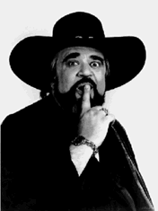

For millions, Wolfman Jack--indisputably the
world's most famous DJ--was the master of ceremonies for the rock 'n' roll
generation of the '60s on radio, and later on television during the '70s. In
the early 1960s, when much of the airwaves were segregated, Bob Smith created
his shadowy wild man alter ego so that he could DJ on the radio the
"rhythm and blues" race records n he loved so much. As the enigmatic Wolfman
Jack, the young white man from one of Brooklyn, one of New York's toughest
neighborhoods, could easily hide behind a voice that masked his true ethnic
roots. Many teens first discovered The Wolfman while scanning the AM radio
band as they cruised Main Street U.S.A. Out of the night came a howling,
guttural, ethereal voice amid a collection of rock 'n' roll, inner-city
ethnic rhythm, and deep south blues records that wouldn't be found on any
"legal" radio station.
Indeed, Wolfman Jack held Court over his young audience from XERF-AM,
just south of Cuidad Acuna, Mexico, where the 250,000 watt signal -- five
times more powerful than any U.S. radio station -- blanketed most of North
America. Without the benefit of traditional advertising, it was word of
mouth that spread the news about the provocative Wolfman and his
nonconformist style -- the kind of style that horrified parents, making it
all the more appealing to a growing legion of young followers. But the
Wolfman Jack story began much earlier, in 1949, when radio reached through
to a troubled youngster. As the Fifties arrived and rock 'n' roll music
found its way into suburban America, Bob Smith imagined himself behind the
mix spinning the turntables, and taming that jive DJ talk. His over-the-air
heroes, black and black-influenced DJs like Dr. Jive, Jocky Jack, Professor
Bob, Sugar Daddy, and others spoke to him, taking him to a secret place --
away from the pain of still growing up -- off into a world of music
unlike anything his family could understand.

At age 16, Bob found himself struggling to survive on the streets and
stay out of the gangs. Once again, his refuge was the radio. DJ Alan Freed,
the legendary king of New York rock and roll radio, was the first to promote
big shows at venues like the Paramount Theatre in Brooklyn and while many of
his friends were hanging out on the neighborhood streets, Bob was waiting at
the stage door of the Paramount, hoping to meet Freed, or one of the many
popular recording stars appearing on his show. His persistence paid off when
he was allowed to work the backstage area as a "gofer. " It was there he met
the great talents of the day, like Jackie Wilson and other revue stars.
Across the river, in New Jersey, Bob hung out at WNJR-AM, a
black-programmed radio station, and it was here his primary education in
radio began. Still, the road to becoming the world's most famous DJ was a
very long one with many stops in between. Not yet 21 years old, Bob loaded
up his car, determined to reach Hollywood and find his fortune, but he got
only as far as Alexandria, Virginia, making a stop that lasted two years.
Living with his sister and brother-in-law in Alexandria, Bob worked at
various jobs while studying for his FCC license at the National Academy of
Broadcasting. Supporting himself by selling door-to-door everything from
encyclopedias to Fuller brushes, he spent his nights studying complicated
mathematics needed to obtain his radio engineering license. It seems he had
found his calling, as the high-school dropout easily rose to the head of his
class with a straight-A average.
His first professional radio job was at WYOUAM, Newport News, Virigina
where Bob took his first air name -- Daddy Jules -- paying homage to the
strong influence black DJs had on his early years. His natural style and
energy led to a large following of listeners and soon, Daddy Jules was a
popular attraction at local teen dances.
Remembering the success of Alan Freed's shows in New York, Bob thought
he could create a venue for rhythm & blues in the Newport News area, so
he opened a dance club. The integrated club -- not especially popular in
1961 -- got the attention of the local chapter of the Ku Klux Klan and
threats were made, ending in a crossburning on the lawn of his house. But
even Virginia was just a stop on the road to fame.
next page
stinky.com